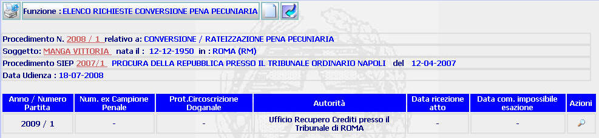

ELENCO RICHIESTE CONVERSIONE PENA PECUNIARIA: La funzione consente di visualizzare l'elenco delle richieste di conversione pena pecuniaria relative al procedimento SIUS corrente e di iscriverne di nuove.
LE MASCHERE VIDEO
La funzione viene realizzata attraverso la maschera seguente in cui compare l'elenco delle richieste di conversione pena pecuniaria relative al procedimento SIUS corrente.

COME FARE PER ...
| Per
visualizzare il
dettaglio del procedimento Sius
l'utente deve cliccare sul link
relativo all'Anno/Numero del procedimento Sius evidenziato in
rosso;
|
| Per visualizzare il dettaglio del soggetto l'utente deve cliccare sul link relativo al cognome/nome del soggetto evidenziato in rosso; |

| Per visualizzare il dettaglio del procedimento Siep l'utente deve cliccare sul link relativo all' Anno/Numero del procedimento Siep evidenziato in rosso; |

|
Per procedere all'inserimento
di una richiesta di conversione pena pecuniaria
l'utente deve cliccare sul pulsante
|
| Per
visualizzare il
dettaglio richiesta conversione pena
pecuniaria, l'utente deve cliccare sul pulsante
|
| Per tornare alla maschera precedente, l'utente deve cliccare sul pulsante
|
CAMPI
La presente funzione non prevede campi da compilare
PULSANTI
Oltre ai pulsanti
 e
e
 facenti parte del gruppo di
pulsanti di "Uso Comune", sono
presenti i seguenti pulsanti
facenti parte del gruppo di
pulsanti di "Uso Comune", sono
presenti i seguenti pulsanti
|
PULSANTE |
DESCRIZIONE |
|
|
A fronte di tale comando, il sistema consente di procedere all'inserimento di una richiesta di conversione pena pecuniaria. |
|
|
A fronte di tale comando, il sistema consente di dettaglio richiesta conversione pena pecuniaria |
BOTTONI
Oltre ai comandi funzionali relativi al menù verticale non sono presenti altri bottoni